| Raster Menu | |
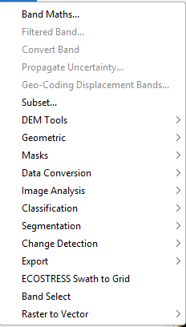
The Band Maths option allows the user to create new image sample values derived from existing bands, tie-point grids and flags.
The Filtered Band option allows the user to apply a filter to the currently selected band and create a new band from the result.
The Convert Band tool converts a virtual band or a filtered band into a "real" band.
This tool perform Gaussian uncertainty propagation from virtual band according to GUM 1995, chapter 5
The Geo-Coding Displacement Bands tool lets users add a number of bands that can be used to assess the performance/accuracy of the current geo-coding.
The Subset operator creates a spatial and/or spectral subset of a data product.
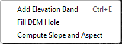
This command allows the user to create a new elevation band from a DEM.
The Fill DEM Hole operator fills holes in DEM product with linear interpolations in both row and column directions.
The Computes Slope and Aspect operator computes slope and aspect from DEM for a given source product.
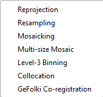
The Reprojection operator reprojects a source product to a target Coordinate Reference System.
The Resampling operator resamples a multi-size source product to a single-size target product.
The Mosaic operator creates a mosaic out of a set of source products.
The Multi-size Mosaic operator generates Mosaic Image for Multi-size Products.
This command performs a spatial and temporal aggregation of a number of input (Level-2) products using the NASA SeaDAS binning scheme.
The Collocation operator collocates two products based on their geo-codings.
The SNAP GeFolki Co-registration processor co-registers two rasters, not considering their location.
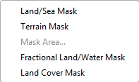
The Land-Sea-Mask operator creates a bitmask defining land vs ocean.
The Terrain-Mask operator detects mountain area using DEM and generates a terrain mask for given SAR image.
The Mask Area command computes the area of a selected mask.
The LandWaterMask operator creates an accurate, fractional, shapefile-based land-water mask.
The Land-Cover-Mask operator uses a land cover band to mask an image based on the classes in the land cover.
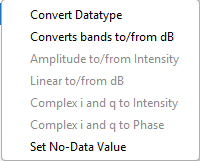
The Convert-Datatype operator changes the datatype of the product
The LinearToFromdB operator Converts bands to and from dB
This command creates a virtual band from an Amplitude or Intensity band
This command creates a dB or linear virtual band from a linear or dB band
This command creates a virtual intensity band from i and q complex bands.
The SetNoDataValue operator sets the no-data value and the NoDataValueUsed flag on every band of the source product.
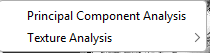
The RPCA-Change-Detection operator generates the principal component images from a stack of co-registered detected images.
The GLCM operator extracts the texture features of the image.
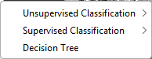
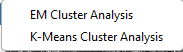
The EMClusterAnalysis operator performs an expectation-maximization (EM) cluster analysis.
The KMeansClusterAnalysis operator performs a K-Means cluster analysis.
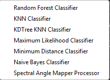
The Random-Forest-Classifier operator performs a Random Forest based classification.
The KNN-Classifier operator performs a K-Nearest Neighbour based classification.
The KDTree-KNN-Classifier operator performs a KDTree KNN based classification.
The Maximum-Likelihood-Classifier operator performs a Maximum Likelihood based classification.
The Minimum-Distance-Classifier operator performs a Minimum Distance based classification.
The Naive-Bayes-Classifier operator performs a Naive Bayes based classification.
The SpectralAngleMapperOp operator classifies a product using the spectral angle mapper algorithm.
The DecisionTree operator performs a decision tree classification.
The GenericRegionMergingOp operator allows the segmentation of images of arbitrary size.
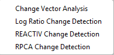
`The ChangeVectorAnalysisOp operator is used to identify spectral changes between two identical scenes which were acquired at different times.
The Change-Detection operator performs change detection by computing the difference, ratio, log ratio and normalized ratio of given image pair.
The REACTIV-Change-Detection operator implements the "Rapid and EAsy Change detection in radar TIme-series by Variation coefficient (REACTIV)" algorithm.
The RPCA-Change-Detection operator performs change detection on a time series of SAR amplitude images based on Robust Principal Component Analysis (RPCA).
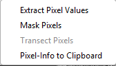
The PixEx operator extracts pixel values given a list of geographical points from one or more data products.
The Mask Pixels command allows the export of pixel values as tab-separated values.
The Transect Pixels command allows the export of pixel values along the current transect as tab-separated values.
Allows the user to copy Pixel-Info to Clipboard.
The EcostressSwath2GridOp operator performs ECOSTRESS Swath to Grid conversion to a specified CRS and radiance to brightness temperature conversion, using the algorithm from 'ECOSTRESS Swath to Grid Conversion Script' by LP DAAC (https://git.earthdata.nasa.gov/projects/LPDUR/repos/ecostress_swath2grid/).
The BandSelect operator creates a new product with only selected bands.
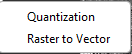
The Quantization operator converts all pixels with values within given intervals to fixed, integer values.
The Raster-To-Vector operator converts all adjacent pixels with the same value from a raster band (with integer values) to a vector.